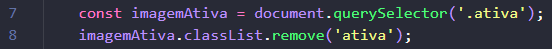
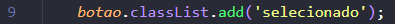
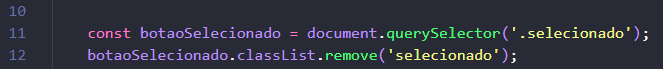

- Criar um carrossel de imagens funcional usando JavaScript puro.
- Ao clicar em um botão, a imagem correspondente deve aparecer.
- Somente uma imagem e um botão ficam ativos por vez.
👉 Um exercÃcio de lógica e manipulação de DOM com interações visuais.
👉 Vamos usar uma lógica muito similar a que usamos no exercÃcio do card com javaScript.
- Como selecionar todos os botões do carrossel?
👉 querySelectorAll retorna uma lista de todos os elementos que possuem a classe informada. Essa lista permite que você acesse cada botão ou imagem pelo Ãndice (como se fosse um array).
👉 Exemplo: document.querySelectorAll('.icones') seleciona todos os Ãcones com a classe Ãcones.
- Use forEach para percorrer os botões
👉 forEach é um método usado para percorrer listas (como as que vêm do querySelectorAll). Para cada botão, ele executa uma função.
👉 addEventListener é usado para reagir a eventos. Neste caso, estamos ouvindo o evento "click" em cada botão.
👉 Quando o botão for clicado, a função dentro do addEventListener será executada.
- Dentro do clique:
👉 querySelector retorna o primeiro elemento que possui a classe informada. Aqui, ele pega o botão que está atualmente com a classe selecionado.
👉 Usamos classList.remove() para tirar a classe selecionado dele. Repare que não temos o . "ponto" antes da classe pois nos referimos a classe em sà e não ao seletor.
👉 Quando falamos de seletores temos sempre o . "ponto" na frente, quando falamos de classe não temos o ponto.
- Adicione a classe "selecionado" no botão que foi clicado.
👉 O botão clicado está representado pela variável. Ao usar classList.add, ele ganha o estilo visual de selecionado.
- Selecione a imagem atual que está com a classe "ativa"
👉 Assim como fizemos com os botões, removemos a classe da imagem atual, que está sendo exibida.
- Use o Ãndice do botão clicado para acessar a imagem correspondente
👉 A imagem correta está na mesma posição (Ãndice) que o botão é clicado.
👉 Assim, usamos imagens[indice] para pegar a imagem certa e classList.add('ativa') para exibi-la.